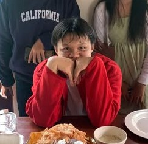

Home
Santiago, Jay Orly Mil
Future programmer in the works, has made a multitude of projects ranging
from small utility apps to prototype games from various languages which include:
Python, Java, Both C languages with a bit of web development on the side.
This small website will be a documentation of both my personal information and
technical prowess as a way to showcase myself to whoever may view this page.
P.S that picture at the top was taken on my 16th birthday last year,
at the time of writing this I am still 16 years old but about to
turn 17 in a weeks time.